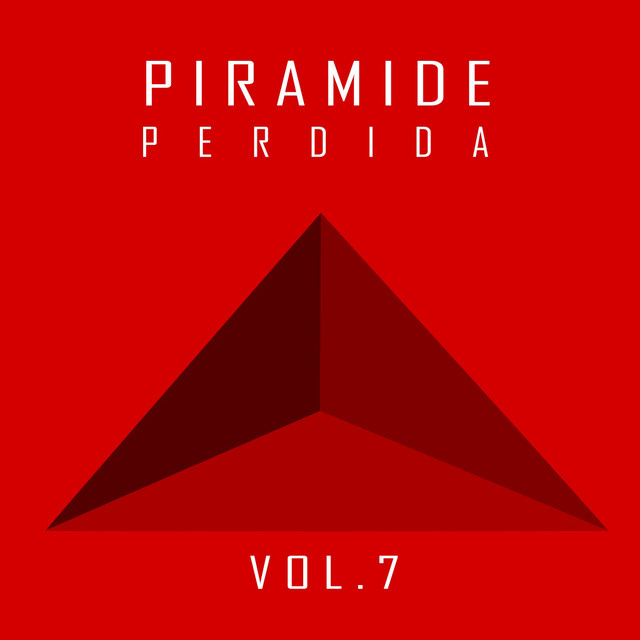
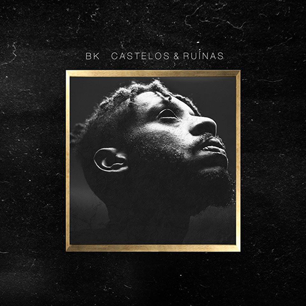
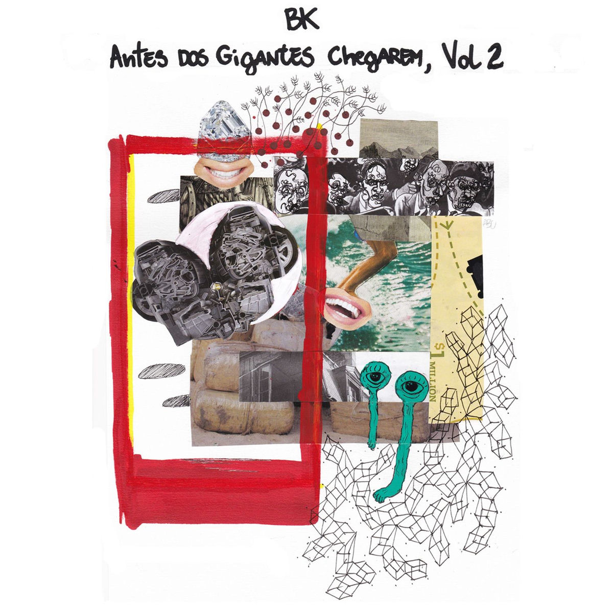
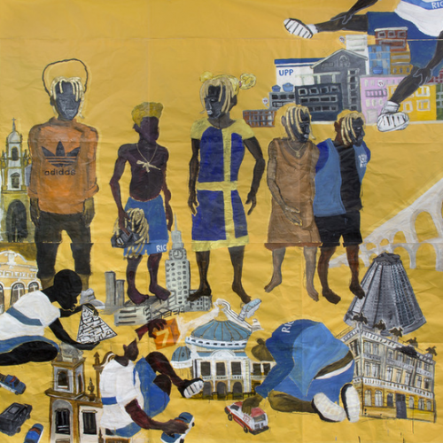
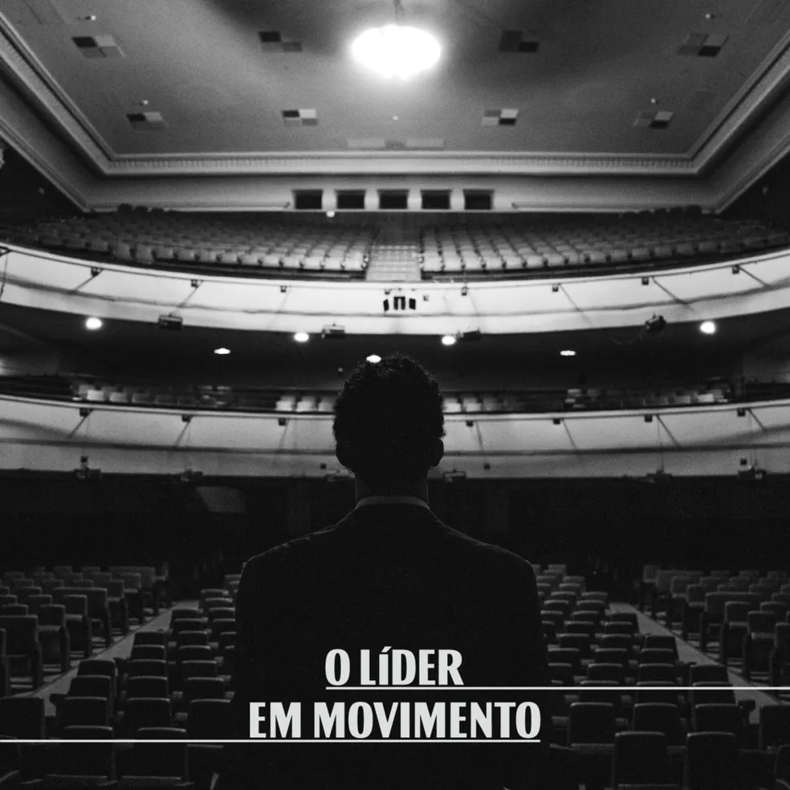
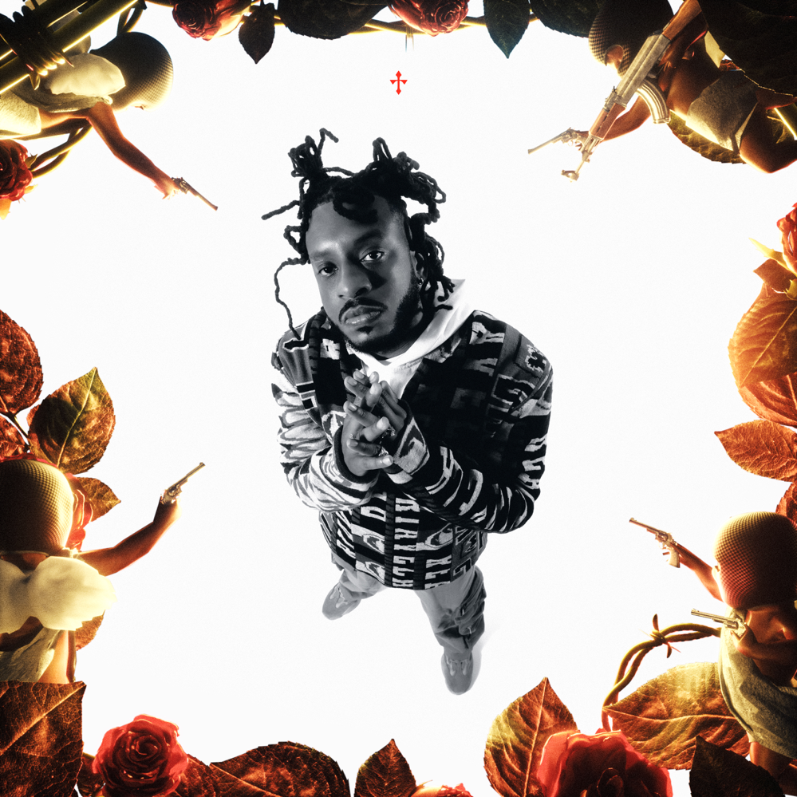
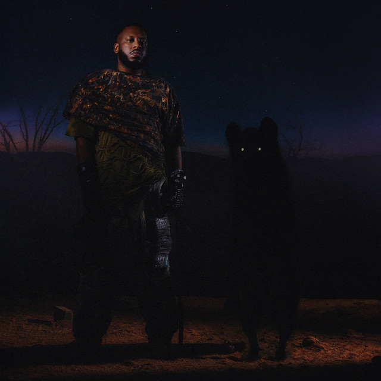

2013
2015
2015

Nectar Gang &
Pirâmide Perdida
Integrou a Nectar Gang e participou da mixtape Seguimos na Sombra, lançada em 2015.
01
Abebe Bikila Costa Santos
"Covardes, falo pros covardes
— BK'
que suas vontades não ferem
quem tem fé.
Rapper. Compositor.
Escritor. Carioca.
BK' (Abebe Bikila Costa Santos) é um dos principais nomes do rap nacional. Suas músicas abordam racismo, desigualdade social, violência policial, ancestralidade, romances e a realidade das periferias — com uma precisão lírica que poucos alcançam.
BK' nasceu na Zona Oeste do Rio de Janeiro, no bairro de Cidade de Deus. Aos 21 anos mudou-se para o Catete, na Zona Sul carioca. Antes de se tornar rapper aos 28 anos, Abebe era produtor de vídeos e acadêmico de cinema — mas já esboçava letras de rap na adolescência, que ganharam maior proporção nas batalhas de rima dos Arcos da Lapa.

Integrou a Nectar Gang e participou da mixtape Seguimos na Sombra, lançada em 2015.

Estreia solo pela Pirâmide Perdida Records. Projeção nacional imediata.

EPs Vol. 1 e Vol. 2. Preparação para o álbum seguinte.

Segundo álbum. Eleito um dos melhores discos brasileiros do ano.

Autoestima do povo negro, combate ao racismo e valorização histórica.

Vida urbana carioca. Cultura negra periférica, boemia, samba e funk.

Inspirado no mito de Ícaro. Trajetória pessoal e profissional em analogia.

Prêmio Sim à Igualdade Racial. Mixtape Verão Criminoso do selo Gigantes.

5º álbum. Autocuidado, ancestralidade. Gigantes Fest e DLRE Tour.
Gosto do BK' porque ele consegue expressar liricamente temas importantes de forma única e com autenticidade. Ele expressa muito bem seus sentimentos e experiências de vida, o que me faz me identificar com suas músicas. Além disso, sua habilidade de contar histórias através das letras é algo que admiro muito.
BK'